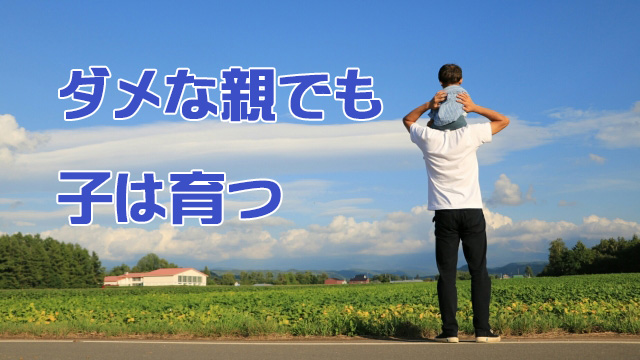

人生を振り返ってみると、つくづく親の影響は大きいものだと感じる。
唐突な話で恐縮だが、私の父はアル中気味の大酒飲みでDV常習者だった。鉄道員（今のJR）で勤務形態も不規則。夜勤や夕方からの出勤も珍しくなく、深夜から酒を飲み始めたり何と夕方の出勤前にも一杯飲んでから出かけたりしていた。
酒が入ると―たいていは夜中近く―よく母に暴力をふるっていた。何か大声で怒鳴ったかと思うとやがて壁やふすまに何かが当たる音がしてこちらも目を覚ましてしまう。それは人を殴る音であったり突き飛ばされたり蹴られる母の悲鳴であったりした。
私もよく殴られた。父親の命令に口答えしたり背いたりすると―命令の多くは夜遅くに酒を買って来いなどという理不尽なものだったが―容赦なく鉄拳が飛んで来た。
あるとき、父の暴力に耐えかねて母と幼い弟たちで夜中に親戚の家に避難したこともある。
何とひどい父親だ！最低な奴だ！
ここまで読んだ人はそう思うだろう。当然である。私も子どもの頃は、こんな家庭に産まれた自分の悲運を呪っていたし反動からか、あまり酒は好きでもないし酔っ払いがそばに来るだけでトリ肌が立つ（ホンモノのトリ肌！）
これも一種のトラウマだろう。
それなら私は父を憎み続けたのかと聞かれると必ずしもそうではない。それが親子関係の難しいところかも知れない。
酒を飲んでいない時の父はむしろ親切で優しく、子煩悩でさえあった。今にして思えば芯は真面目だったのだろう。子どもに手を挙げる男のどこが子煩悩で真面目なんだと言われるかも知れないが事実だから仕方ない。
親類の話では若いころの父は優しく真面目で酒も一滴も飲めなかったと言う。変貌したのは軍隊に入ってからで、本人も「酒は軍隊で覚えた」と言っていた。つまり戦場での過酷な体験が後年の大酒や暴力につながったのかも知れない。
ともかく普段の父（酒が入っていないときの）は私を頻繁に映画に連れて行ったり、マンガ本を買ってくれたり子どもの出入りできないシャレた店にも連れて行ってくれた。
休みの日は決まって私と愛犬を連れ、サイクリングにも出かけた。つまり良き父親の一面もあったということだ。
私と父は決して不仲ではなかった。父の語る戦争体験は具体的で臨場感にあふれていた。人は「戦争体験」というと悲惨で暗い話を想像するが、父の語るそれは兵士たちの日常生活が中心で少なくとも子どもの私には興味をひかれるものだった。もちろん敵と交戦した話や悲惨な場面の描写もあったが、不謹慎ながら私にはワクワクする冒険譚に違いなかった。
くり返し聞かされるうちに自分もその場（戦場）にいるようなリアルな錯覚に陥った。
このことは私にとって悪いことではなかった。それは戦争に行った者にしか絶対分からない秘密を知った喜びであり、それは歴史の証人になった興奮でもあったからだ。父はさらに具体的エピソードだけでなく、当時の世界情勢や現地でのすさまじい諜報活動の実態も織り交ぜて話してくれた。
これらの話によって私は歴史が好きになり、また出来事にはその背景を知ることが必要だということも分かった。
これらの思考形態を身につけたことは後々の私の人生に多大な影響を与えたことは間違いない。人生を切りひらいていく上で大きな武器になったと思う。
父は世間的に見れば良い父親ではなかったろう。しかし父の与えた影響は悪いものだけでは決してなかったということだ。
私の父ほど極端でなくても、このことはどの親にも当てはまると思う。子どもには親の欠点も長所も両方伝わるものであり、それはコインの表裏のように切り離すことはできない。良い部分だけ伝えようとしても無駄だということだ。
良い親を演じようとすることも無駄だ。一つ屋根の下で一緒に暮らしている以上親のすべては隠しようもなく子に伝わる。だから親は自分の良いところもダメな部分もすべて子どもに見抜かれている（いま見抜かれなくてもそのうち子どもは分かる）ことを承知の上で「ありのまま」を生きるしかない。
子どもの側からすれば親から受け継いだ2つの遺産、すなわち好ましくない影響と受け継ぐべき長所を時間をかけて統合していく作業が必要となる。それは時に長く苦しい道のりであるかも知れない。
私の場合は父の負の遺産（飲酒と暴力）を消化するのにやはり数十年を要した。自分の中にも父と同じ暴力を好む血が流れているのではないかという恐れ。目前で母が殴られるのを見続けたトラウマ的体験とそれに伴う無力感や罪悪感など。
しかし40を過ぎたあたりから、父の飲酒と暴力は戦争体験のトラウマであったのではないかと気づきそれ以来父に対する怒りの感情は消えていった。父は私が中1のとき45歳で鉄道事故で死んだが、私もそのときの父の年齢に近づいて色々分かったのである。
二十歳（はたち）そこそこの若者が4年間も最前線で戦い続けたのである。父が暴力をふるっていたのは昭和30年代だから戦後十数年しか経っていない。彼の魂はまだ戦場にあったのだ。平和な戦後の日常生活に彼はまだ適応できなかったのだろう。そう考えると今の私は当時の父を憐れに思う。
こうして父へのわだかまりが無くなるにつれて父から受け継いだ良い遺産（影響）に素直に感謝の気持ちがわいてくるようになった。
誰でもが親に何かを背負わされて生きている。肩に乗るその荷は時に重く時に軽い。
人によってはその重荷に耐えかね「親のせいで～」と恨むこともある。しかし、親から受け取った荷物は必ずしも悪いものだけではないはずだ。荷物の中身をちゃんと開いて点検すれば、すばらしい宝物が詰まっていたりする。
負の遺産にしか見えない物の中にもそれはある。親の遺してくれた遺産の中から良きものを掘り起こし大事に育てることで、自らの美質を育てることもできる。
それが子の務めでもあり親への恩返しではないだろうか。